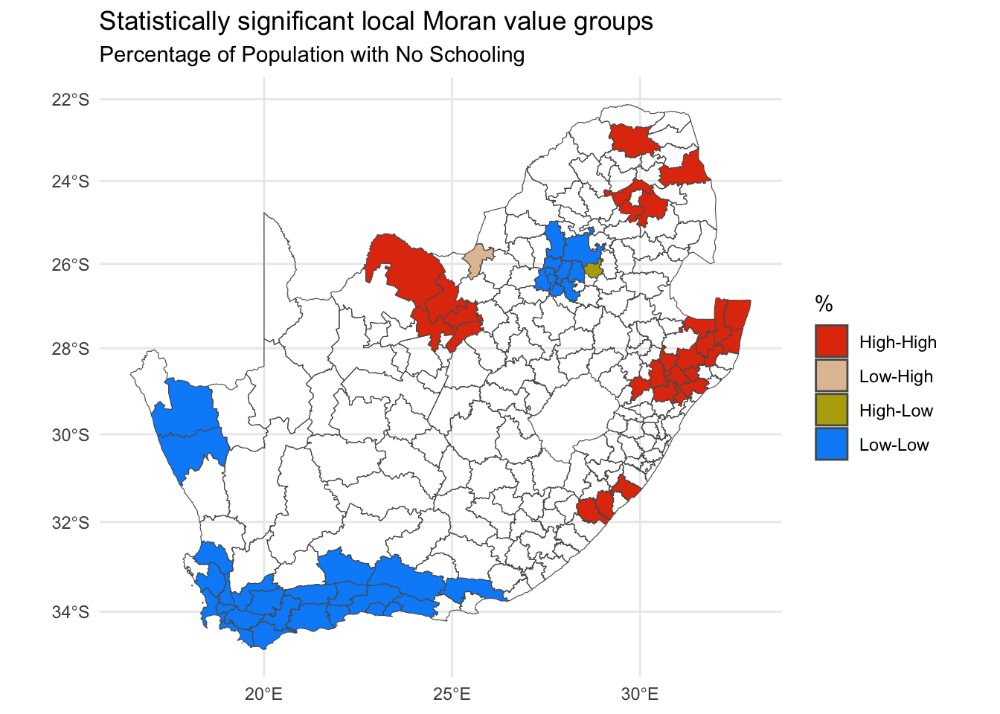

We begin by recreating one of the maps from the previous session. You may wish to change your working directory to be the same as previously if it is not already (it should be if you are saving all your files in a Project and begin this session by opening that Project).
Code
installed <-installed.packages()[,1]pkgs <-c("tidyverse", "sf", "RColorBrewer", "classInt", "ggplot2")install <- pkgs[!(pkgs %in% installed)]if(length(install)) install.packages(install, dependencies =TRUE)invisible(lapply(pkgs, require, character.only =TRUE))if(!file.exists("municipal.RData")) download.file("https://github.com/profrichharris/profrichharris.github.io/blob/main/MandM/workspaces/municipal.RData?raw=true", "municipal.RData", mode ="wb")load("municipal.RData")brks <-classIntervals(municipal$No_schooling, n =7, style ="jenks")$brksmunicipal$No_schooling_gp <-cut(municipal$No_schooling, brks,include.lowest =TRUE)ggplot(data = municipal, aes(fill = No_schooling_gp)) +geom_sf() +scale_fill_brewer("%", palette ="RdYlBu", direction =-1) +theme_minimal() +theme(axis.title.x =element_blank(), axis.title.y =element_blank()) +guides(fill =guide_legend(reverse =TRUE)) +labs(title ="Percentage of Population with No Schooling",subtitle ="2011 South African Census Data",caption ="Source: Statistics South Africa" )
Looking at the map, the geographical pattern of the percentage of the population with no schooling appears to be neither random nor uniform. Instead, there is a tendency for similar values to be found in closely located municipalities, creating clusters of red and of blue values (and of yellow too). However, simply ‘eye-balling’ the map to look for patterns isn’t very scientific and it can be very deceptive. You can probably see patterns in the following map, too, but they arise from an entirely random permutation of the previous map’s data – all I have done to generate the map is randomly ‘shuffle’ the data around the locations on the map.
{width=“200%”}
cols4all
The main focus of today’s session is about assessing whether the patterns we think we see in a map might be random or whether there are clusters of ‘hot spots’ or ‘cold spots’ within it. But, before we get there, it is worth introducing a relatively new package which was published, on CRAN a few years ago. It is called cols4all. It is described as containing “a large collection of palettes, but with the central question: which palettes are good and why?”
If we now activate its dashboard, we can learn a lot about different colour palettes and whether, for example, they are colour-blind friendly (try opening in browser if the dashboard does not load properly but that option appears).
Code
c4a_gui()
That may generate a message saying \(install.packages(c("shinyjs", "kableExtra", "colorblindcheck", "plotly"))\), in which case, do so, and try c4a_gui() again.
{width=“200%”}
We can discover, for example, that the diverging palette blue_red3 in the hcl series goes from blue to red and is colour-blind friendly. Let’s update the previous map, using cols4all to select the palette and keeping in mind that the fill colour is determined from the variable municipal$No_schooling_gp, which is a discrete (categorical) factor (use class(municipal$No_schooling_gp) to confirm this). You may need to close the dashboard, above, before you can proceed by hitting the esc key after clicking in the R Console. Note the use of the scale_fill_discrete_c4a_cat() function in the ggplot code below – which reads scale the fill colours of the map using their discrete categories and a cols4all (c4a) colour category, which is the palette, "hcl.blue_red3".
Code
ggplot(data = municipal, aes(fill = No_schooling_gp)) +geom_sf() +scale_fill_discrete_c4a_cat(name ="%", palette ="hcl.blue_red3") +theme_minimal() +theme(axis.title.x =element_blank(), axis.title.y =element_blank()) +guides(fill =guide_legend(reverse =TRUE)) +labs(title ="Percentage of Population with No Schooling",subtitle ="2011 South African Census Data",caption ="Source: Statistics South Africa" )
The principle is very similar if, for example, we want to use by_gu_yl from the kovesi series to apply a diverging palette to the continuous variable No_schooling, with the middle colour of the palette set at the median of the variable.
Code
ggplot(data = municipal, aes(fill = No_schooling)) +geom_sf() +scale_fill_continuous_c4a_div(name ="%", palette ="kovesi.bu_gy_yl",mid =median(municipal$No_schooling),n.breaks =7) +theme_minimal() +theme(axis.title.x =element_blank(), axis.title.y =element_blank()) +guides(fill =guide_legend(reverse =TRUE)) +labs(title ="Percentage of Population with No Schooling",subtitle ="2011 South African Census Data",caption ="Source: Statistics South Africa" )
Moran’s test
The classic way of quantifying how similar places are to their neighbours is to calculate the Moran’s statistic. It is a measure of spatial autocorrelation – of how much the values of a variable exhibit spatial clustering of alike values (positive spatial autocorrelation) or of ‘opposite’ values (negative spatial autocorrelation: like the black-white of a chess board, for example). We can calculate this statistic in R using the spdep package. You may recall that that is a problem with the object (the map) municipal because of an invalid geometry (see previous session and try which(!st_is_valid(municipal)) to confirm). We were able to partially ‘fix’ this by changing its coordinate reference system.
If the purpose of a Moran’s test is to quantify how similar places are to their neighbours, then the first step is to define neighbours. How to do so isn’t necessarily obvious. Think about if I asked you to identify your neighbours. Would it just be people who lived next door to you? Or within a certain distance of your house? Or those you interact with most? Or…?
In the following example, neighbours are places that share a border (places that are contiguous). Presently it is sufficient for them to meet at a single point, so, if two places happened to be triangular in shape, it would be sufficient for the corners of those triangles to touch to count as neighbours. If the requirement is that they share an edge, not merely a corner, then change the default argument from queen = TRUE to queen = FALSE (see ?poly2nb for details).
Code
neighbours <-poly2nb(municipal)
The function poly2nb() includes the argument snap, which is the threshold distance boundary points can be apart to still be considered contiguous. It has a default value of sqrt(.Machine$double.eps) which, on my present computer, is equal to 1.4901161^{-8}and is tiny. The problem is it can sometimes be too tiny, not capturing neighbourhood relationships when, for example, there are ‘slivers’ or slight gaps between places. To avoid this, it can be helpful to replace the default value with a small but still larger distance, e.g.poly2nb(municipal, snap = 1)\. Consider doing this when, for example, you obtain places that appear to have no contiguous neighbours but you know that really they do.
The summary of neighbours reveals that, on average, each South African municipality has 5.2 neighbours but it can range from 1 (the 183rd region in the municipal data) to 10 (region 69). The most frequent number is 6.
Code
summary(neighbours)
Neighbour list object:
Number of regions: 234
Number of nonzero links: 1216
Percentage nonzero weights: 2.220761
Average number of links: 5.196581
Link number distribution:
1 2 3 4 5 6 7 8 9 10
1 7 24 42 52 69 31 3 4 1
1 least connected region:
183 with 1 link
1 most connected region:
69 with 10 links
It’s pretty common for the average number of contiguous neighbours to be about 5 and the most frequent number of contiguous neighbours to be 5 or 6. It suggests that the spatial configuration of the places is loosely approximating a hexagonal tessellation, although places on the edge of a study region will typically have fewer contiguous neighbours then those at the centre. But, of course, it isn’t guaranteed.
The neighbours of region 69 are,
Code
neighbours[[69]]
[1] 60 64 68 139 153 154 157 158 164 165
It is instructive to write the list of neighbours to an external neighbours file,
Code
write.nb.gal(neighbours, "neighbours.gal")
… which can then be viewed by using file.edit("neighbours.gal"). The file will look like the below and has a very simple format. The top line say there are 234 regions. Going down, the first of these has 4 neighbours, which are regions 13, 14, 15 and 16. The second has 6 neighbours, which are 3, 4, 8, 18, 189, 234, and so forth. The same information could be encoded in a \(234\times234\) matrix, where cell \((i, j)\) is given a value of one if \(i\) and \(j\) are considered neighbours, else zero. The problem with that approach is most of the matrix is sparse (contains nothing but zeros) because most regions are not neighbours. It is quicker and more memory efficient to state which regions are neighbours. The rest, by definition, are not.
These neighbourhood relationships can be viewed as a graph by extracting the coordinate points (st_coordinates()), of the centroids (st_centroid()), of the polygons that represent each municipality, and by using the plot functions for sf (simple features) and nb (neighbours list) objects. Centroids are the centre points of geometric objects. The argument of_largest_polygon = TRUE returns the centroid of the largest (sub)polygon of a MULTIPOLYGON rather than of the whole MULTIPOLYGON, a multipolygon being when one place is represented by multiple polygons such as a mainland and an offshore island (so of_largest_polygon = TRUE would give the point at the centre of the mainland). Setting this argument to true should help the centroid to lie within the boundary of the place, rather than, say, in the sea between the mainland and an island, although it isn’t guaranteed.
Imagine an area that for some reason is roughly C shaped. Where would the centroid of that be and would it be within the area’s own boundary?
Code
coords <-st_centroid(municipal, of_largest_polygon =TRUE)pts <-st_coordinates(coords)par(mai =c(0, 0, 0, 0)) # Remove the margins and white space around the plotplot(st_geometry(municipal), border ="grey")plot(neighbours, pts, add = T)
Creating spatial weights
The neighbourhood list simply defines which places are neighbours. The spatial weights goes a step further and gives a weight to each neighbourhood link. One motivation for doing this is to stop any statistic that is based on a sum across neighbourhood links to be dominated by those neighbourhoods with most neighbours. Moran is one such statistic. Hence, if a region has six neighbours, each of those is given a weight of \(1/6\). If it has four, \(1/4\), and so forth. This is called row-standardisation and is the default style in the conversion of a neighbourhood to a spatial weights list with the function nb2listw(). See ?nb2listw for alternative specifications.
Code
spweight <-nb2listw(neighbours)# Here are the neighbours of and weights for the first region:spweight$neighbours[[1]]
[1] 13 14 15 16
Code
spweight$weights[[1]]
[1] 0.25 0.25 0.25 0.25
Dealing with places that don’t have any neighbours
Not all places have neighbours. Islands, for example, can be separated from the mainland by the sea. If you attempt to create spatial weights using the nb2listw() function with a neighbours list that includes places without neighbours, then you will get an error message:
Error in nb2listw(neighbours) : Empty neighbour sets found.
There are four ways you can address this problem.
Change the snap distance in the function poly2nb() to include, as neighbours, places that appear not to actually share a border but are within a certain threshold distance apart. As noted previously, this can be helpful to deal with digitisation errors – when, for example, there are small gaps between places that do really share a boundary.
Change the way you are defining the neighbourhood relationships – for example, by identifying the \(k\) nearest neighbours of each location, regardless of whether they share a border or not (see below). Everywhere has somewhere that is closest to it.
Save the .gal file using write.nb.gal() and then manually edit it to make any connections you wish to between places. You can read the revised version back into R using the function read.gal() – see ?read.gal().
Leave it as it, with some places not having any neighbours, but specify the argument zero.policy = TRUE in nb2listw so it allows empty sets. For example, spweight <- nb2listw(neighbours, zero.policy = TRUE). Other related functions will also need zero.policy = TRUE to be included, such as moran.test(), moran.plot() and localmoran().
Presently, however, this is not an issue because none of the South African municipalities are without a contiguous neighbour.
Calculating the Moran’s value
To recap: we began with a definition of neighbours based on contiguity. We then row-standardised those weights to generate the spatial weights. With those we can now run a Moran’s test to measure the strength of spatial autocorrelation between neighbours in the municipal$No_schooling variable.
Moran I test under randomisation
data: municipal$No_schooling
weights: spweight
Moran I statistic standard deviate = 14.014, p-value < 2.2e-16
alternative hypothesis: greater
sample estimates:
Moran I statistic Expectation Variance
0.576702139 -0.004291845 0.001718747
The Moran statistic is 0.577 and the 95% confidence interval is,
Code
z <-c(-1.96, 1.96)round(moran$estimate[1] + z *sqrt(moran$estimate[3]), 3)
[1] 0.495 0.658
Since the confidence interval does not include the expected value of -0.004, we can conclude that there is statistically significant positive autocorrelation in the variables – municipalities with higher percentages of no schooling tend to be surrounded by other municipalities with the same. Similarly, low values tend to be surrounded by other ones that are low.
The expected value is very close to zero so what we are almost saying is that because the confidence interval does not span zero so there is evidence of positive spatial autocorrelation. Although this is quite close to being true, to actually be correct would require the expected value of the statistic to be zero when there is no spatial autocorrelation. It isn’t. It is presently -0.004 and approaches zero as the number of observations increases: \(E(I) = -1 / (n - 1)\), where \(n\) is the number of observations.
Moran plot and local Moran values
Whilst there is positive spatial autocorrelation in the values overall, not everywhere is surrounded by similar values. The following plot has 4 quadrants marked upon it. The top right indicates places where both they and their average neighbour have above average values of municipal$No_schooling. We can describe these as high-high clusters on the map. The bottom left indicates places where they and their average neighbour have below average values. These are low-low clusters. Both the high-high and the low-low contribute to positive spatial autocorrelation because, for these, the places and their neighbours display similar values. The two other quadrants do not. In the top left are low-high clusters. In the bottom right are high-low. There reveal clusters of dissimilar values (negative spatial autocorrelation). In the chart, the high-high and low-low places are more plentiful than the low-high and high-low ones, hence the upwards sloping line of best fit and the positive Moran statistic.
Code
# Return the plot margins to their default values in R:par(mai=c(1.02,0.82,0.82,0.42))moran.plot(municipal$No_schooling, spweight)
It is straightforward to map which quadrant each place belongs to. First, we calculate the local Moran statistics proposed by Anselin (1995). A local statistic is one that applies to a subspace of the map, whereas a global statistic is a summary measure for the whole map. Anselin showed that the (global) Moran statistic can be decomposed into a series of local Moran values, each measuring how similar each place is (individually) to its neighbours. There are 234 municipalities in the data so there will be 234 local Moran values too.
In fact, it includes three different versions of what we might want, the differences being due to which average “low” and “high” are defined by (see the text below the section Value in ?localmoran for more details). Let’s now map one of them, still using the cols4all package to select a colour palette.
Code
quadr <-attr(localm, "quadr")ggplot(data = municipal, aes(fill = quadr$median)) +geom_sf() +scale_fill_discrete_c4a_cat(name ="%", palette ="parks.charmonix") +theme_minimal() +guides(fill =guide_legend(reverse =TRUE)) +labs(title ="Local Moran value groups",subtitle ="Percentage of Population with No Schooling" )

Unfortunately, the resulting map is somewhat misleading because not all of the local Moran values are statistically significant and some of the various high-high, low-low, etc. pairings my be only trivially alike or dissimilar. Looking at the top of the local Moran data suggests a way of isolating those that are statistically significant and is adopted in the following map.
# Set the 'quadrants' for insignificant values to NAquadr <-attr(localm, "quadr")quadr[localm[,5] >0.05|is.na(localm[,5]), ] <-NAggplot(data = municipal, aes(fill = quadr$median)) +geom_sf() +scale_fill_discrete_c4a_cat(name ="%", palette ="parks.charmonix",na.translate =FALSE) +theme_minimal() +guides(fill =guide_legend(reverse =TRUE)) +labs(title ="Statistically significant local Moran value groups",subtitle ="Percentage of Population with No Schooling" )
Arguably, this new map may still not apply a strict enough definition of statistical significance because the issue of repeat testing has not been tackled. Remember, there are 234 places, 234 local Moran values and therefore 234 tests of significance. Essentially the issue is if we test often enough, then it is hardly surprising if some values emerge as ‘significant’. It’s a bit like a fishing trip where we keep casting until we finally catch something.
The p-values can be adjusted for this using R’s p.adjust() function. The following example uses a false discovery rate method (method = fdr) but other alternatives include method = bonferroni. A question is whether this is now too strict given that there are not 234 independent tests. Rather, the data have overlapping geographies (places share neighbours) as well as spatial dependencies.
Code
quadr <-attr(localm, "quadr")quadr[p.adjust(localm[,5], method ="fdr") >0.05|is.na(localm[,5]), ] <-NA# There is now a problem in that only 2 of the 4 categories remain,# which are Low-Low and High-High:unique(quadr)
mean median pysal
1 <NA> <NA> <NA>
68 Low-Low Low-Low Low-Low
92 High-High High-High High-High
Code
# For compatibility with the previous map, I extract its palettepal <-c4a("parks.charmonix", 4)pal
[1] "#008FF8" "#B6AA0D" "#E2C2A2" "#E23B0E"
Code
# and then only use the first and fourth of those colours in the new map:ggplot(data = municipal, aes(fill = quadr$median)) +geom_sf() +scale_fill_discrete(name ="%", type = pal[c(1,4)], na.translate =FALSE) +theme_minimal() +guides(fill =guide_legend(reverse =TRUE)) +labs(title ="Statistically significant (p-adjusted) local Moran value groups",subtitle ="Percentage of Population with No Schooling" )
Issues with the Moran statistic
How to define neighbours?
n-order contiguity
Any statistic that includes spatial weights is dependent upon how those weights are defined. How, then, to decide which places are neighbours. The calculations above use first order contiguity – places that share a boundary – but we could extend that definition to include neighbours of neighbours, or more:
Code
neighbours <-nblag(neighbours, maxlag =2)par(mai =c(0, 0, 1, 0))par(mfrow =c(1,2)) # Plot graphics in a 1 row by 2 column gridplot(st_geometry(municipal), border ="grey", main ="First order contiguity")plot(neighbours[[1]], pts, add = T)plot(st_geometry(municipal), border ="grey", main ="Second order contiguity")plot(neighbours[[2]], pts, add = T)
Changing the definition of neighbours does, of course, change the value of the Moran statistic and it will change the local Moran values too.
[[1]]
Moran I statistic
0.5767021
[[2]]
Moran I statistic
0.3890747
In passing, if you remember the discussion around piping and the differences between %>% and |> back when we were looking at ‘Flavours of R’ and `Tidyverse’ then you may recall how the following code is equivalent to the above but is more ‘clunky’:
[[1]]
Moran I statistic
0.5767021
[[2]]
Moran I statistic
0.3890747
k nearest neighbours
There is no particular reason to stick with a contiguity-based definition of neighbours. We could, for example, look for the \(k\) nearest neighbours (or, more precisely, the \(k\) nearest centroids to the centroid of each place), as in the two examples below.
Code
par(mai =c(0, 0, 1, 0))par(mfrow =c(1,2))coords <-st_centroid(municipal, of_largest_polygon =TRUE)neighbours <-knn2nb(knearneigh(coords, k =5))plot(st_geometry(municipal), border ="grey", main ="Five nearest neighbours")plot(neighbours, pts, add = T)neighbours <-knn2nb(knearneigh(coords, k =10))plot(st_geometry(municipal), border ="grey", main ="Ten nearest neighbours")plot(neighbours, pts, add = T)
The function knearneigh() contains the default argument, longlat = NULL. It should be ok not to change this here to longlat = TRUE because it ought to pick this up from coords’s coordinate reference system. If you suspect it isn’t or if coords is simply a matrix of point coordinates, not an explicitly spatial object, change the default argument to longlat = TRUE.
We can, if we wish, run through all the possible values of \(k\), from \(1\) to \(k_{max} = (n - 1)\) where \(n\) is the number of municipalities, and consider the Moran statistics that they generate. The resulting chart shows that the statistic is highly dependent on the scale of the analysis: as \(k\) increases, neighbourhood relationships extend over an increasing portion of the map, and the statistic tends to decline. It declines because nearby places tend to have similar values whereas those that are further away introduce more variation because of the spatial heterogeneity across the map. This is an empirical example of Tobler’s first ‘law’ of geography in action: “everything is related to everything else, but near things are more related than distant things.”
The code would generate a lot of warning messages, warning you that \(k\) has become a large subset of all \(n\). However, I have suppressed them by wrapping knearneigh() in the suppressWarnings() function.
Code
n <-nrow(municipal)I <-sapply(1: (n-1), \(k) {suppressWarnings(knearneigh(coords, k)) |>knn2nb() |># I am mixing mynb2listw() %>%# pipes here (deliberately!)moran.test(municipal$No_schooling, .) -> moran moran$estimate[1]})ggplot(data.frame(k =1:(n-1), I = I), aes(x = k, y = I)) +geom_line() +ylab("Moran statistic") +theme_minimal() -> gg
In principle the chart could be used to identify an ‘optimal’ value of \(k\). Unfortunately, the present case offers few clues as to what that optimal value should be. We could use the inflection point of the curve, based on this tutorial:
infl_pt <-bese(k, I, index =0)$iplastcat("\nThe inflection point is at k = ", infl_pt, "\n")
The inflection point is at k = 142
Code
g +geom_vline(xintercept = infl_pt, linetype ="dotted")
The result has correctly identified where the curve turns and you could reasonably argue that this is a good value of \(k\)to avoid given the Moran’s statistic is higher for values of \(k\) either side of it. However, eliminating one value from the choice set still leaves a lot of others to choose from!
We could also try selecting based on seeking to avoid a sharp decrease in the Moran statistic for an increase in \(k\) by one. The sharpest fall comes by changing from \(k = 3\) to \(k = 4\) (the function diff() in the code chunk below calculates the difference between the value of one number in a vector and the next number to its right in that same vector):
Code
slope <-diff(I)# It's really diff(I) / diff(k) that should be calculated but diff(k) = 1 in all cases heremax_fall <- k[which.min(slope)]cat("\nThe greatest fall in the Moran value is between k = ", max_fall, "and k = ", max_fall +1, "\n")
The greatest fall in the Moran value is between k = 3 and k = 4
Code
g +geom_vline(xintercept = max_fall, linetype ="dashed")
This shows that the ‘cost’ in increasing from \(k = 3\) to \(k = 4\) is a relatively big drop in the similarity of the neighbours to each other (it’s still not actually that large though; it’s a drop of 0.032.
We could look at the drop in the Moran statistic over a larger increase in \(k\) than one. In the following code chunk the differences are calculated over a span of ten.
Code
slope <-diff(I, lag =10)max_fall <- k[which.min(slope)]cat("\nNow the greatest fall in the Moran value is between k = ", max_fall, "and k = ", max_fall +10, "\n")
Now the greatest fall in the Moran value is between k = 1 and k = 11
Code
g +geom_vline(xintercept =c(max_fall, max_fall +10), linetype ="dotdash")
In either case, what it favours is a small value of \(k\). That is hardly surprising because near neighbours do tend to be more similar – again, that’s Tobler’s first ‘law’ of geography, which, although not a law at all and with plenty of exceptions, still has a ring of truth to it. Similarities tend to drop away most quickly at fairly short distances and then ‘flatten out’ at greater distances, which is what the curve in the charts above is showing.
So, then, the ‘optimal’ value of \(k\) is a small number of nearest neighbours? Not necessarily! When calculating the Moran statistic it is based on the correlation of each location with their neighbours. Imagine there is error in the data; some rogue results. Alternatively, imagine some places are just very unusual. Those errors or outliers will have more influence in the calculation if they are pooled with only a small number of other neighbours, whereas if more neighbours are included so that their unusualness has more chance of being ‘averaged out’. But, if we do choose to include lots of neighbours then we are including ones that are further away and probably less like the location we are correlating them against. We will return to this trade-off when we look at geographically weighted statistics.
How else could we decide on the value of \(k\) to select? The p-value for the Moran statistics is not shown in the charts but is least when \(k = 200\). That might be a justification, of sorts, for choosing \(k = 200\) but it is splitting hairs somewhat when all but one of the p-values is tiny and well below \(p = 0.001\).
Perhaps the best way is simply to decide on a minimum threshold value for the Moran statistic and use that as the basis for deciding \(k\), but quite how you decide on that threshold is unclear. Here is the maximum value of \(k\) for a purely arbitrary threshold of \(I > 0.4\).
Code
threshold_k <-max(which(I >0.4))cat("\nThe maximum value of k for a Moran value greater than 0.4 is ", threshold_k, "\n")
The maximum value of k for a Moran value greater than 0.4 is 21
Code
g +geom_vline(xintercept = threshold_k, linetype ="dashed") +geom_hline(yintercept =0.4, linetype ="dotted")
Distance bounds
Other ways of defining neighbours include whether they lie within a lower or upper distance bound of each other: see ?dnearneigh and this vignette on Creating Neighbours for further information.
How to interpet the I statistic
Conceptually, the Moran statistic is easy to understand: it is a (global) measure of the correlation between the values of a variable at a set of locations, and the value of the same variable for those locations’ neighbours.
More simply, it can be thought of as the correlation – the strength of association – between locations and their average neighbour. Keep in mind that it is a measure of correlation, not the more commonly used Pearson correlation. The difference is evident in the following comparison, with \(k = 21\), where the Moran value is less than two thirds of the Pearson correlation between locations and their average neighbour, where the value for the average neighbour is calculated using last.listw().
As Brunsdon and Comber note, the value of Moran’s I is not constrained to be in the range from -1 to +1 but changes with the spatial weights matrix. Following, Jong et al. (1984, p. 20), the extremes for the current spatial weights are,
Code
listw2mat(spweight) %>%range(eigen((. +t(.)) /2))
[1] -0.420394 1.031139
If this is correct then not only is this not in the range -1 to 1, it is not symmetric around the expected (null) value of -0.004.
Given this, it might, perhaps, be regarded as preferable to use the more readily interpreted Pearson correlation between locations and their average neighbour. That correlation, with \(k = 21\) nearest neighbours, was calculated above and is 0.664. Whether that figure arose by chance can be assessed using a permutation approach. Given the geography of the South African municipalities, their neighbourhood relations and given the data values, then permuting those values randomly 1000 times allows us to look whether the value of 0.664 is unusual compared to what could arise by chance. Specifically, we look at whether the value is outside of the ‘middle 95%’ of values that have been generated through randomisation. If it is, then it suggests a less than 5-in-100 probability that it arose by chance. (A permutation approach is also available for the global and local Moran statistics: see ?moran.mc and ?localmoran_perm.)
Code
n <-length(municipal$No_schooling)sapply(1:1000, \(x) {sample(municipal$No_schooling, n) %>%cor(lag.listw(spweight, .))}) %>%quantile(prob =c(0.025, 0.975))
2.5% 97.5%
-0.2181785 0.1471766
Note, however, that there is a subtle but important difference between Moran’s I and the Pearson correlation of the values and their average neighbour. Moran’s I can be used to determine whether, for example, high values of a measurement tend to be surrounded by average neighbours that also have a high value, where the measurement scale is the same for the locations and their average neighbour. What the Pearson correlation is assessing is whether values that are high, relatively speaking, for all the locations are surrounded by average neighbours that have a high value relatively speaking, for all the average neighbours. What they are measuring the correlation of is therefore not the same. The difference can be seen in the formulae below – look at the denominators in each case:
where \(I_{xy}\) is the Moran value, \(r_{xy}\) is the Pearson value, \(x\) is the measured value at each location and \(y\) is the (spatially lagged) value for the average neighbour.
Getis and Ord G-Statistic
A different method for identifying ‘hot’ or ‘cold spots’ of a variable is provided by the G-statistic. As Brunsdon and Comber observe, the statistic – which is a local statistic, calculated for each location in turn – is based on the proportion of the total sum of standardised attribute values that are within a threshold distance, \(d\), of each area centroid. Looking at the map below, which is of South African wards (simplified slightly from this source), we may suspect there are clusters of places with greater percentages of their populations having relatively high incomes and that these are spatial anomalies. Because the percentages are extremely skewed, they have been plotted with a square root transformation applied to the scale of the map (trans = "sqrt"). Note that we are also using a col4all diverging colour palette for a continuous variable.
Code
download.file("https://github.com/profrichharris/profrichharris.github.io/blob/main/MandM/workspaces/wards.RData?raw=true", "wards.RData", mode ="wb", quiet =TRUE)load("wards.RData")ggplot(data = wards, aes(fill = High_income)) +geom_sf(colour ="transparent") +scale_fill_continuous_c4a_div(name ="%", palette ="hcl.blue_yellow2",trans ="sqrt", mid =median(wards$High_income)) +theme_minimal() +labs(title ="Percentage of Population with income R614401 or greater",subtitle ="2011 South African Census Data",caption ="Source: Statistics South Africa" )
The G-statistic requires a binary spatial weights (style = "B", below), whereby locations either are or are not within the threshold distance of each other. The following has a threshold distance of 20km. Not all of the ward centroids will be within 20km of another which creates situations of zero neighbours. That is tolerated by setting zero.policy = TRUE in the conversion from a neighbours to spatial list.
As with the function knearneigh(), dnearneigh() has the default argument, longlat = NULL, which should not need changing here to longlat = TRUE because it ought to pick this up from coords’s coordinate reference system. However, don’t take this for granted.
Having calculated the local G values, we can map them, using a manually generated fill palette. The argument na.translate = F removes the NA values from the legend but not from the map, wherein they are shaded white (na.value = "white"). The G values are also standardised z-values, hence values of 1.96 or greater are relatively rate if the assumption that the statistic is Normally distributed is warranted. (If it isn’t, consider using localG_perm.)
Code
brks <-c(min(wards$localG, na.rm =TRUE), -1.96, 1.96, 2.58, 3.29,max(wards$localG, na.rm =TRUE))wards$localG_gp <-cut(wards$localG, brks, include.lowest =TRUE)ggplot() +geom_sf(data = wards, aes(fill = localG_gp), colour =NA) +scale_fill_discrete_c4a_div(name ="G", palette ="brewer.rd_yl_bu",reverse =TRUE, na.translate =FALSE) +theme_minimal() +guides(fill =guide_legend(reverse =TRUE)) +labs(title ="Local G statistic",subtitle ="Percentage of Population with income R614401 or greater",caption ="With a 20km threshold" )
Let’s now add a refinement to the map and, based on what we learned from the previous session, label the cities that appear to contain a hot spot of higher percentages of higher earners. Note the use of st_join() which is a spatial join: it identifies, from geography, which ward the cities are located in and appends the ward data, including the G statistics, to the cities, retaining only those that are in the most significant hot spots. Note that this definition of ‘most significant’ doesn’t address the problem of repeat testing which we also saw with the local Moran statistics.
The results are dependent on the distance threshold defining which places are or are not neighbours. Here are the results with a distance threshold of 100km.
This session has been about identifying and quantifying spatial clustering in data, using a combination of ‘global’ (whole map) and local statistics; specifically, Moran’s I, its local equivalent, the local Moran values, and the Getis-Ord G statistic. These statistics are dependent on the spatial weights matrix used in their calculation, which does, unfortunately, create something of a vicious circle: ideally that matrix would be calibrated to the spatial patterns evident in the data but those patterns are only measured and quantified once the weights matrix has been specified. For example, we could, in principle, use Moran’s I to measure the spatial autocorrelation and select the weights matrix accordingly. However, we need the spatial weights matrix to calculate Moran’s I. One option is to take the view that looking at the patterns at a range of scales is itself revealing so choose lots of bandwidths, not just one, and treat it as a multiscale analysis, as in the following.
Code
# Sets the threshold distance from 20 to 180km in intervals of 20# I chose 9 distances because they can be shown in a 3 x 3 grid of mapsd <-seq(from =20, by =20, length.out =9)# Calculate the G statistics for each distance and save them# as a list of sf features (maps)coords <-st_centroid(wards, of_largest_polygon =TRUE)maps <-suppressWarnings(lapply(d, \(x) { neighbours <-dnearneigh(coords, 0, x) spweight <-nb2listw(neighbours, style ="B", zero.policy =TRUE) wards$localG <-localG(wards$High_income, spweight) wards$distance <- xreturn(wards) }))# Bind the maps together into a single object to be used# for the faceting in ggplot2maps <-do.call(rbind, maps)brks <-c(min(maps$localG, na.rm =TRUE),-3.29, -2.58, -1.96, 1.96, 2.58, 3.29,max(maps$localG, na.rm =TRUE))maps$localG_gp <-cut(maps$localG, brks, include.lowest =TRUE)# This function is used with the labeller argument in the# facet_wrap function to customise the title of each sub-plotfacet_labels <- \(x) paste0(x, "km radius")ggplot(data = maps, aes(fill = localG_gp)) +geom_sf(colour =NA) +scale_fill_discrete_c4a_div(name ="G", palette ="brewer.rd_yl_bu",reverse =TRUE, na.translate =FALSE) +facet_wrap(~ distance, labeller =labeller(distance = facet_labels)) +theme_light() +theme(axis.title.x =element_blank(), axis.title.y =element_blank(),axis.ticks.x =element_blank(), axis.ticks.y =element_blank(),axis.text.x =element_blank(), axis.text.y =element_blank(),legend.position ="bottom") +guides(fill =guide_legend(reverse =TRUE))
---title: "Measuring spatial autocorrelation"execute: warning: false message: false---```{r}#| include: falseinstalled <-installed.packages()[,1]pkgs <-c("tidyverse", "proxy", "sf", "RColorBrewer", "classInt", "ggplot2", "sfdep", "remotes","inflection", "colorspace", "cols4all")install <- pkgs[!(pkgs %in% installed)]if(length(install)) install.packages(install, dependencies =TRUE, repos ="https://cloud.r-project.org")```## IntroductionWe begin by recreating one of the maps from the previous session. You may wish to change your working directory to be the same as previously if it is not already (it should be if you are saving all your files in a Project and begin this session by opening that Project).```{r}installed <-installed.packages()[,1]pkgs <-c("tidyverse", "sf", "RColorBrewer", "classInt", "ggplot2")install <- pkgs[!(pkgs %in% installed)]if(length(install)) install.packages(install, dependencies =TRUE)invisible(lapply(pkgs, require, character.only =TRUE))if(!file.exists("municipal.RData")) download.file("https://github.com/profrichharris/profrichharris.github.io/blob/main/MandM/workspaces/municipal.RData?raw=true", "municipal.RData", mode ="wb")load("municipal.RData")brks <-classIntervals(municipal$No_schooling, n =7, style ="jenks")$brksmunicipal$No_schooling_gp <-cut(municipal$No_schooling, brks,include.lowest =TRUE)ggplot(data = municipal, aes(fill = No_schooling_gp)) +geom_sf() +scale_fill_brewer("%", palette ="RdYlBu", direction =-1) +theme_minimal() +theme(axis.title.x =element_blank(), axis.title.y =element_blank()) +guides(fill =guide_legend(reverse =TRUE)) +labs(title ="Percentage of Population with No Schooling",subtitle ="2011 South African Census Data",caption ="Source: Statistics South Africa" ) ```Looking at the map, the geographical pattern of the percentage of the population with no schooling appears to be neither random nor uniform. Instead, there is a tendency for similar values to be found in closely located municipalities, creating clusters of red and of blue values (and of yellow too). However, simply 'eye-balling' the map to look for patterns isn't very scientific and it can be very deceptive. You can probably see patterns in the following map, too, but they arise from an entirely *random* permutation of the previous map's data -- all I have done to generate the map is randomly 'shuffle' the data around the locations on the map.{height="200%"}{width="200%"}## `cols4all`The main focus of today's session is about assessing whether the patterns we think we see in a map might be random or whether there are clusters of 'hot spots' or 'cold spots' within it. But, before we get there, it is worth introducing a relatively new package which was published, on [CRAN](https://cran.r-project.org/){target="_blank"} a few years ago. It is called [cols4all](https://cran.r-project.org/web/packages/cols4all/index.html){target="_blank"}. It is described as containing "a large collection of palettes, but with the central question: which palettes are good and why?"```{r}if(!("colorspace"%in% installed)) install.packages("colorspace",dependencies =TRUE)if(!("cols4all"%in% installed)) install.packages("cols4all",dependencies =TRUE)require(cols4all)```If we now activate its dashboard, we can learn a lot about different colour palettes and whether, for example, they are colour-blind friendly (try opening in browser if the dashboard does not load properly but that option appears).```{r}#| eval: falsec4a_gui()```That may generate a message saying $install.packages(c("shinyjs", "kableExtra", "colorblindcheck", "plotly"))$, in which case, do so, and try `c4a_gui()` again.{height="200%"}{width="200%"}We can discover, for example, that the diverging palette `blue_red3` in the `hcl` series goes from blue to red and is colour-blind friendly. Let's update the previous map, using `cols4all` to select the palette and keeping in mind that the fill colour is determined from the variable `municipal$No_schooling_gp`, which is a discrete (categorical) factor (use `class(municipal$No_schooling_gp)` to confirm this). You may need to close the dashboard, above, before you can proceed by hitting the `esc` key after clicking in the R Console. Note the use of the `scale_fill_discrete_c4a_cat()` function in the `ggplot` code below -- which reads **scale** the **fill** colours of the map using their **discrete** categories and a cols4all (**c4a**) colour category, which is the palette, `"hcl.blue_red3"`. ```{r}ggplot(data = municipal, aes(fill = No_schooling_gp)) +geom_sf() +scale_fill_discrete_c4a_cat(name ="%", palette ="hcl.blue_red3") +theme_minimal() +theme(axis.title.x =element_blank(), axis.title.y =element_blank()) +guides(fill =guide_legend(reverse =TRUE)) +labs(title ="Percentage of Population with No Schooling",subtitle ="2011 South African Census Data",caption ="Source: Statistics South Africa" ) ```The principle is very similar if, for example, we want to use `by_gu_yl` from the `kovesi` series to apply a diverging palette to the continuous variable `No_schooling`, with the middle colour of the palette set at the median of the variable.```{r}ggplot(data = municipal, aes(fill = No_schooling)) +geom_sf() +scale_fill_continuous_c4a_div(name ="%", palette ="kovesi.bu_gy_yl",mid =median(municipal$No_schooling),n.breaks =7) +theme_minimal() +theme(axis.title.x =element_blank(), axis.title.y =element_blank()) +guides(fill =guide_legend(reverse =TRUE)) +labs(title ="Percentage of Population with No Schooling",subtitle ="2011 South African Census Data",caption ="Source: Statistics South Africa" ) ```## Moran's testThe classic way of quantifying how similar places are to their neighbours is to calculate the Moran's statistic. It is a measure of spatial autocorrelation -- of how much the values of a variable exhibit spatial clustering of alike values (positive spatial autocorrelation) or of 'opposite' values (negative spatial autocorrelation: like the black-white of a chess board, for example). We can calculate this statistic in R using the [spdep](https://cran.r-project.org/web/packages/spdep/index.html){target="_blank"} package. You may recall that that is a problem with the object (the map) `municipal` because of an invalid geometry (see previous session and try `which(!st_is_valid(municipal))` to confirm). We were able to partially 'fix' this by changing its coordinate reference system.```{r}if(!("spdep"%in% installed)) install.packages("spdep", dependencies =TRUE)require(spdep)municipal <-st_transform(municipal, 3857)```### Creating a neighbours listIf the purpose of a Moran's test is to quantify how similar places are to their neighbours, then the first step is to define neighbours. How to do so isn't necessarily obvious. Think about if I asked you to identify your neighbours. Would it just be people who lived next door to you? Or within a certain distance of your house? Or those you interact with most? Or...?In the following example, neighbours are places that share a border (places that are contiguous). Presently it is sufficient for them to meet at a single point, so, if two places happened to be triangular in shape, it would be sufficient for the corners of those triangles to touch to count as neighbours. If the requirement is that they share an edge, not merely a corner, then change the default argument from `queen = TRUE` to `queen = FALSE` (see `?poly2nb` for details).```{r}neighbours <-poly2nb(municipal)```{width="75"}<font size = 3>The function `poly2nb()` includes the argument `snap`, which is the threshold distance boundary points can be apart to still be considered contiguous. It has a default value of `sqrt(.Machine$double.eps)` which, on my present computer, is equal to `r sqrt(.Machine$double.eps)`and is tiny. The problem is it can sometimes be too tiny, not capturing neighbourhood relationships when, for example, there are 'slivers' or slight gaps between places. **To avoid this, it can be helpful to replace the default value with a small but still larger distance, e.g.`poly2nb(municipal, snap = 1)\`**. Consider doing this when, for example, you obtain places that appear to have no contiguous neighbours but you know that really they do.</font>The summary of `neighbours` reveals that, on average, each South African municipality has 5.2 neighbours but it can range from 1 (the 183rd region in the municipal data) to 10 (region 69). The most frequent number is 6.```{r}summary(neighbours)```{width="75"}<font size = 3>It's pretty common for the average number of contiguous neighbours to be about 5 and the most frequent number of contiguous neighbours to be 5 or 6. It suggests that the spatial configuration of the places is loosely approximating a hexagonal tessellation, although places on the edge of a study region will typically have fewer contiguous neighbours then those at the centre. But, of course, it isn't guaranteed.</font>The neighbours of region 69 are,```{r}neighbours[[69]]```It is instructive to write the list of neighbours to an external neighbours file,```{r}#| eval: falsewrite.nb.gal(neighbours, "neighbours.gal")```... which can then be viewed by using `file.edit("neighbours.gal")`. The file will look like the below and has a very simple format. The top line say there are 234 regions. Going down, the first of these has 4 neighbours, which are regions 13, 14, 15 and 16. The second has 6 neighbours, which are 3, 4, 8, 18, 189, 234, and so forth. The same information could be encoded in a $234\times234$ matrix, where cell $(i, j)$ is given a value of one if $i$ and $j$ are considered neighbours, else zero. The problem with that approach is most of the matrix is sparse (contains nothing but zeros) because most regions are not neighbours. It is quicker and more memory efficient to state which regions are neighbours. The rest, by definition, are not.These neighbourhood relationships can be viewed as a graph by extracting the coordinate points (`st_coordinates()`), of the centroids (`st_centroid()`), of the polygons that represent each municipality, and by using the plot functions for `sf` (simple features) and `nb` (neighbours list) objects. Centroids are the centre points of geometric objects. The argument `of_largest_polygon = TRUE` returns the centroid of the largest (sub)polygon of a MULTIPOLYGON rather than of the whole MULTIPOLYGON, a multipolygon being when one place is represented by multiple polygons such as a mainland and an offshore island (so `of_largest_polygon = TRUE` would give the point at the centre of the mainland). Setting this argument to true should help the centroid to lie within the boundary of the place, rather than, say, in the sea between the mainland and an island, although it isn't guaranteed.{width="75"}<font size = 3>Imagine an area that for some reason is roughly C shaped. Where would the centroid of that be and would it be within the area's own boundary?</font>```{r}coords <-st_centroid(municipal, of_largest_polygon =TRUE)pts <-st_coordinates(coords)par(mai =c(0, 0, 0, 0)) # Remove the margins and white space around the plotplot(st_geometry(municipal), border ="grey")plot(neighbours, pts, add = T)```### Creating spatial weightsThe neighbourhood list simply defines which places are neighbours. The spatial weights goes a step further and gives a weight to each neighbourhood link. One motivation for doing this is to stop any statistic that is based on a sum across neighbourhood links to be dominated by those neighbourhoods with most neighbours. Moran is one such statistic. Hence, if a region has six neighbours, each of those is given a weight of $1/6$. If it has four, $1/4$, and so forth. This is called row-standardisation and is the default style in the conversion of a neighbourhood to a spatial weights list with the function `nb2listw()`. See `?nb2listw` for alternative specifications.```{r}spweight <-nb2listw(neighbours)# Here are the neighbours of and weights for the first region:spweight$neighbours[[1]]spweight$weights[[1]]```#### Dealing with places that don't have any neighboursNot all places have neighbours. Islands, for example, can be separated from the mainland by the sea. If you attempt to create spatial weights using the `nb2listw()` function with a neighbours list that includes places without neighbours, then you will get an error message:<span style="color:red">Error in nb2listw(neighbours) : Empty neighbour sets found</span>.There are four ways you can address this problem. - Change the `snap` distance in the function `poly2nb()` to include, as neighbours, places that appear not to actually share a border but are within a certain threshold distance apart. As noted previously, this can be helpful to deal with digitisation errors -- when, for example, there are small gaps between places that do really share a boundary.- Change the way you are defining the neighbourhood relationships -- for example, by identifying the $k$ nearest neighbours of each location, regardless of whether they share a border or not (see below). Everywhere has somewhere that is closest to it.- Save the .gal file using `write.nb.gal()` and then manually edit it to make any connections you wish to between places. You can read the revised version back into R using the function `read.gal()` -- see `?read.gal()`.- Leave it as it, with some places not having any neighbours, but specify the argument `zero.policy = TRUE` in `nb2listw` so it allows empty sets. For example, `spweight <- nb2listw(neighbours, zero.policy = TRUE)`. Other related functions will also need `zero.policy = TRUE` to be included, such as `moran.test()`, `moran.plot()` and `localmoran()`.Presently, however, this is not an issue because none of the South African municipalities are without a contiguous neighbour. ### Calculating the Moran's valueTo recap: we began with a definition of neighbours based on contiguity. We then row-standardised those weights to generate the spatial weights. With those we can now run a Moran's test to measure the strength of spatial autocorrelation between neighbours in the `municipal$No_schooling` variable.```{r}moran <-moran.test(municipal$No_schooling, spweight)moran```The Moran statistic is `r round(moran$estimate[1], 3)` and the 95% confidence interval is,```{r}z <-c(-1.96, 1.96)round(moran$estimate[1] + z *sqrt(moran$estimate[3]), 3)```Since the confidence interval does not include the expected value of `r round(moran$estimate[2], 3)`, we can conclude that there is statistically significant positive autocorrelation in the variables -- municipalities with higher percentages of no schooling tend to be surrounded by other municipalities with the same. Similarly, low values tend to be surrounded by other ones that are low.{width="75"}<font size = 3>The expected value is very close to zero so what we are *almost* saying is that because the confidence interval does not span zero so there is evidence of positive spatial autocorrelation. Although this is quite close to being true, to actually be correct would require the expected value of the statistic to be zero when there is no spatial autocorrelation. It isn't. It is presently `r round(moran$estimate[2], 3)` and approaches zero as the number of observations increases: $E(I) = -1 / (n - 1)$, where $n$ is the number of observations.</font>## Moran plot and local Moran valuesWhilst there is positive spatial autocorrelation in the values overall, not everywhere is surrounded by similar values. The following plot has 4 quadrants marked upon it. The top right indicates places where both they and their average neighbour have above average values of `municipal$No_schooling`. We can describe these as **high-high** clusters on the map. The bottom left indicates places where they and their average neighbour have below average values. These are **low-low** clusters. Both the high-high and the low-low contribute to positive spatial autocorrelation because, for these, the places and their neighbours display similar values. The two other quadrants do not. In the top left are **low-high** clusters. In the bottom right are **high-low**. There reveal clusters of dissimilar values (negative spatial autocorrelation). In the chart, the high-high and low-low places are more plentiful than the low-high and high-low ones, hence the upwards sloping line of best fit and the positive Moran statistic.```{r}# Return the plot margins to their default values in R:par(mai=c(1.02,0.82,0.82,0.42))moran.plot(municipal$No_schooling, spweight)```It is straightforward to map which quadrant each place belongs to. First, we calculate the **local** Moran statistics proposed by [Anselin (1995)](https://onlinelibrary.wiley.com/doi/10.1111/j.1538-4632.1995.tb00338.x){target="_blank"}. **A local statistic is one that applies to a subspace of the map, whereas a global statistic is a summary measure for the whole map.** Anselin showed that the (global) Moran statistic can be decomposed into a series of local Moran values, each measuring how similar each place is (individually) to its neighbours. There are 234 municipalities in the data so there will be 234 local Moran values too.```{r}localm <-localmoran(municipal$No_schooling, spweight)```Usefully, if we look at the attributes of `localm`, we discover an attribute named `quadr` which contains what we want and which can be mapped. ```{r}names(attributes(localm))head(attr(localm, "quadr"))```In fact, it includes three different versions of what we might want, the differences being due to which average "low" and "high" are defined by (see the text below the section Value in `?localmoran` for more details). Let's now map one of them, still using the `cols4all` package to select a colour palette.```{r}quadr <-attr(localm, "quadr")ggplot(data = municipal, aes(fill = quadr$median)) +geom_sf() +scale_fill_discrete_c4a_cat(name ="%", palette ="parks.charmonix") +theme_minimal() +guides(fill =guide_legend(reverse =TRUE)) +labs(title ="Local Moran value groups",subtitle ="Percentage of Population with No Schooling" )```Unfortunately, the resulting map is somewhat misleading because not all of the local Moran values are statistically significant and some of the various high-high, low-low, etc. pairings my be only trivially alike or dissimilar. Looking at the top of the local Moran data suggests a way of isolating those that are statistically significant and is adopted in the following map.```{r}head(localm, n =3) # The p-values are in column 5# Set the 'quadrants' for insignificant values to NAquadr <-attr(localm, "quadr")quadr[localm[,5] >0.05|is.na(localm[,5]), ] <-NAggplot(data = municipal, aes(fill = quadr$median)) +geom_sf() +scale_fill_discrete_c4a_cat(name ="%", palette ="parks.charmonix",na.translate =FALSE) +theme_minimal() +guides(fill =guide_legend(reverse =TRUE)) +labs(title ="Statistically significant local Moran value groups",subtitle ="Percentage of Population with No Schooling" )```Arguably, this new map may still not apply a strict enough definition of statistical significance because the issue of repeat testing has not been tackled. Remember, there are 234 places, 234 local Moran values and therefore 234 tests of significance. Essentially the issue is if we test often enough, then it is hardly surprising if some values emerge as 'significant'. It's a bit like a fishing trip where we keep casting until we finally catch something.The p-values can be adjusted for this using R's `p.adjust()` function. The following example uses a false discovery rate method (`method = fdr`) but other alternatives include `method = bonferroni`. A question is whether this is now *too* strict given that there are not 234 independent tests. Rather, the data have overlapping geographies (places share neighbours) as well as spatial dependencies.```{r}quadr <-attr(localm, "quadr")quadr[p.adjust(localm[,5], method ="fdr") >0.05|is.na(localm[,5]), ] <-NA# There is now a problem in that only 2 of the 4 categories remain,# which are Low-Low and High-High:unique(quadr)# For compatibility with the previous map, I extract its palettepal <-c4a("parks.charmonix", 4)pal# and then only use the first and fourth of those colours in the new map:ggplot(data = municipal, aes(fill = quadr$median)) +geom_sf() +scale_fill_discrete(name ="%", type = pal[c(1,4)], na.translate =FALSE) +theme_minimal() +guides(fill =guide_legend(reverse =TRUE)) +labs(title ="Statistically significant (p-adjusted) local Moran value groups",subtitle ="Percentage of Population with No Schooling" )```## Issues with the Moran statistic### How to define neighbours?#### n-order contiguityAny statistic that includes spatial weights is dependent upon how those weights are defined. How, then, to decide which places are neighbours. The calculations above use first order contiguity -- places that share a boundary -- but we could extend that definition to include neighbours of neighbours, or more:```{r}neighbours <-nblag(neighbours, maxlag =2)par(mai =c(0, 0, 1, 0))par(mfrow =c(1,2)) # Plot graphics in a 1 row by 2 column gridplot(st_geometry(municipal), border ="grey", main ="First order contiguity")plot(neighbours[[1]], pts, add = T)plot(st_geometry(municipal), border ="grey", main ="Second order contiguity")plot(neighbours[[2]], pts, add = T)```Changing the definition of neighbours does, of course, change the value of the Moran statistic and it will change the local Moran values too.```{r}lapply(neighbours, \(x) {nb2listw(x) %>%moran.test(municipal$No_schooling, .) -> moran moran$estimate[1]})```In passing, if you remember the discussion around piping and the differences between `%>%` and `|>` back when we were looking at 'Flavours of R' and \`Tidyverse' then you may recall how the following code is equivalent to the above but is more 'clunky':```{r}lapply(neighbours, \(x) {nb2listw(x) |> (\(y) moran.test(municipal$No_schooling, y))() -> moran moran$estimate[1]})```#### k nearest neighboursThere is no particular reason to stick with a contiguity-based definition of neighbours. We could, for example, look for the $k$ nearest neighbours (or, more precisely, the $k$ nearest centroids to the centroid of each place), as in the two examples below.```{r}par(mai =c(0, 0, 1, 0))par(mfrow =c(1,2))coords <-st_centroid(municipal, of_largest_polygon =TRUE)neighbours <-knn2nb(knearneigh(coords, k =5))plot(st_geometry(municipal), border ="grey", main ="Five nearest neighbours")plot(neighbours, pts, add = T)neighbours <-knn2nb(knearneigh(coords, k =10))plot(st_geometry(municipal), border ="grey", main ="Ten nearest neighbours")plot(neighbours, pts, add = T)```{width="75"}<font size = 3>The function `knearneigh()` contains the default argument, `longlat = NULL`. It should be ok not to change this here to `longlat = TRUE` because it ought to pick this up from `coords`'s coordinate reference system. If you suspect it isn't or if `coords` is simply a matrix of point coordinates, not an explicitly spatial object, change the default argument to `longlat = TRUE`.</font>We can, if we wish, run through all the possible values of $k$, from $1$ to $k_{max} = (n - 1)$ where $n$ is the number of municipalities, and consider the Moran statistics that they generate. The resulting chart shows that the statistic is highly dependent on the scale of the analysis: as $k$ increases, neighbourhood relationships extend over an increasing portion of the map, and the statistic tends to decline. It declines because nearby places tend to have similar values whereas those that are further away introduce more variation because of the spatial heterogeneity across the map. This is an empirical example of Tobler's first 'law' of geography in action: "everything is related to everything else, but near things are more related than distant things."{width="75"}<font size = 3>The code would generate a lot of warning messages, warning you that $k$ has become a large subset of all $n$. However, I have suppressed them by wrapping `knearneigh()` in the `suppressWarnings()` function.</font>```{r}n <-nrow(municipal)I <-sapply(1: (n-1), \(k) {suppressWarnings(knearneigh(coords, k)) |>knn2nb() |># I am mixing mynb2listw() %>%# pipes here (deliberately!)moran.test(municipal$No_schooling, .) -> moran moran$estimate[1]})ggplot(data.frame(k =1:(n-1), I = I), aes(x = k, y = I)) +geom_line() +ylab("Moran statistic") +theme_minimal() -> gg```In principle the chart could be used to identify an 'optimal' value of $k$. Unfortunately, the present case offers few clues as to what that optimal value should be. We could use the inflection point of the curve, based on [this tutorial](https://cran.r-project.org/web/packages/inflection/vignettes/inflectionMissionImpossible.html){target="_blank"}:```{r}if(!("inflection"%in% installed)) install.packages("inflection",dependencies =TRUE)require(inflection)k <-1: (n-1)check_curve(k, I)infl_pt <-bese(k, I, index =0)$iplastcat("\nThe inflection point is at k = ", infl_pt, "\n")g +geom_vline(xintercept = infl_pt, linetype ="dotted")```The result has correctly identified where the curve turns and you could reasonably argue that this is a good value of $k$ **to avoid** given the Moran's statistic is higher for values of $k$ either side of it. However, eliminating one value from the choice set still leaves a lot of others to choose from!We could also try selecting based on seeking to avoid a sharp decrease in the Moran statistic for an increase in $k$ by one. The sharpest fall comes by changing from $k = 3$ to $k = 4$ (the function `diff()` in the code chunk below calculates the difference between the value of one number in a vector and the next number to its right in that same vector):```{r}slope <-diff(I)# It's really diff(I) / diff(k) that should be calculated but diff(k) = 1 in all cases heremax_fall <- k[which.min(slope)]cat("\nThe greatest fall in the Moran value is between k = ", max_fall, "and k = ", max_fall +1, "\n")g +geom_vline(xintercept = max_fall, linetype ="dashed")```This shows that the 'cost' in increasing from $k = 3$ to $k = 4$ is a *relatively* big drop in the similarity of the neighbours to each other (it's still not actually that large though; it's a drop of `r round(abs(min(slope)),3)`.We could look at the drop in the Moran statistic over a larger increase in $k$ than one. In the following code chunk the differences are calculated over a span of ten.```{r}slope <-diff(I, lag =10)max_fall <- k[which.min(slope)]cat("\nNow the greatest fall in the Moran value is between k = ", max_fall, "and k = ", max_fall +10, "\n")g +geom_vline(xintercept =c(max_fall, max_fall +10), linetype ="dotdash")```In either case, what it favours is a small value of $k$. That is hardly surprising because near neighbours do tend to be more similar -- again, that's [Tobler's first 'law' of geography](https://en.wikipedia.org/wiki/Tobler%27s_first_law_of_geography){target="_blank"}, which, although not a law at all and with plenty of exceptions, still has a ring of truth to it. Similarities tend to drop away most quickly at fairly short distances and then 'flatten out' at greater distances, which is what the curve in the charts above is showing.So, then, the 'optimal' value of $k$ is a small number of nearest neighbours? Not necessarily! When calculating the Moran statistic it is based on the correlation of each location with their neighbours. Imagine there is error in the data; some rogue results. Alternatively, imagine some places are just very unusual. Those errors or outliers will have more influence in the calculation if they are pooled with only a small number of other neighbours, whereas if more neighbours are included so that their unusualness has more chance of being 'averaged out'. But, if we do choose to include lots of neighbours then we are including ones that are further away and probably less like the location we are correlating them against. We will return to this trade-off when we look at geographically weighted statistics.How else could we decide on the value of $k$ to select? The p-value for the Moran statistics is not shown in the charts but is least when $k = 200$. That might be a justification, of sorts, for choosing $k = 200$ but it is splitting hairs somewhat when all but one of the p-values is tiny and well below $p = 0.001$.Perhaps the best way is simply to decide on a minimum threshold value for the Moran statistic and use that as the basis for deciding $k$, but quite how you decide on that threshold is unclear. Here is the maximum value of $k$ for a purely arbitrary threshold of $I > 0.4$.```{r}threshold_k <-max(which(I >0.4))cat("\nThe maximum value of k for a Moran value greater than 0.4 is ", threshold_k, "\n")g +geom_vline(xintercept = threshold_k, linetype ="dashed") +geom_hline(yintercept =0.4, linetype ="dotted")```#### Distance boundsOther ways of defining neighbours include whether they lie within a lower or upper distance bound of each other: see `?dnearneigh` and [this vignette on Creating Neighbours](https://r-spatial.github.io/spdep/articles/nb.html){target="_blank"} for further information.### How to interpet the I statisticConceptually, the Moran statistic is easy to understand: it is a (global) measure of the correlation between the values of a variable at a set of locations, and the value of the same variable for those locations' neighbours.More simply, it can be thought of as the correlation -- the strength of association -- between locations and their average neighbour. Keep in mind that it is *a* measure of correlation, not the more commonly used [Pearson correlation](https://en.wikipedia.org/wiki/Pearson_correlation_coefficient){target="_blank"}. The difference is evident in the following comparison, with $k = 21$, where the Moran value is less than two thirds of the Pearson correlation between locations and their average neighbour, where the value for the average neighbour is calculated using `last.listw()`.```{r}spweight <-nb2listw(knn2nb(knearneigh(coords, 21)))pearson <-cor(lag.listw(spweight, municipal$No_schooling), municipal$No_schooling)moran <-moran.test(municipal$No_schooling, spweight)$estimate[1]data.frame(person = pearson, moran = moran, row.names ="correlation")```As [Brunsdon and Comber](https://us.sagepub.com/en-us/nam/an-introduction-to-r-for-spatial-analysis-and-mapping/book258267){targrt="_blank"} note, the value of Moran's I is not constrained to be in the range from -1 to +1 but changes with the spatial weights matrix. Following, [Jong et al. (1984, p. 20)](https://doi.org/10.1111/j.1538-4632.1984.tb00797.x){target="_blank"}, the extremes for the current spatial weights are,```{r}listw2mat(spweight) %>%range(eigen((. +t(.)) /2))```If this is correct then not only is this not in the range -1 to 1, it is not symmetric around the expected (null) value of `r round(-1/(nrow(municipal) - 1), 3)`.Given this, it might, perhaps, be regarded as preferable to use the more readily interpreted Pearson correlation between locations and their average neighbour. That correlation, with $k = 21$ nearest neighbours, was calculated above and is `r round(pearson, 3)`. Whether that figure arose by chance can be assessed using a permutation approach. Given the geography of the South African municipalities, their neighbourhood relations and given the data values, then permuting those values randomly 1000 times allows us to look whether the value of `r round(pearson, 3)` is unusual compared to what could arise by chance. Specifically, we look at whether the value is outside of the 'middle 95%' of values that have been generated through randomisation. If it is, then it suggests a less than 5-in-100 probability that it arose by chance. (A permutation approach is also available for the global and local Moran statistics: see `?moran.mc` and `?localmoran_perm`.)```{r}n <-length(municipal$No_schooling)sapply(1:1000, \(x) {sample(municipal$No_schooling, n) %>%cor(lag.listw(spweight, .))}) %>%quantile(prob =c(0.025, 0.975))```Note, however, that there is a subtle but important difference between Moran's I and the Pearson correlation of the values and their average neighbour. Moran's I can be used to determine whether, for example, high values of a measurement tend to be surrounded by average neighbours that also have a high value, where the measurement scale is the same for the locations and their average neighbour. What the Pearson correlation is assessing is whether values that are high, *relatively speaking, for all the locations* are surrounded by average neighbours that have a high value *relatively speaking, for all the average neighbours*. What they are measuring the correlation of is therefore not the same. The difference can be seen in the formulae below -- look at the denominators in each case:$I_{xy} = \dfrac{\sum_{i=1}^{n}(x_i-\bar{x})(y_i-\bar{y})}{\sum_{i=1}^{n}(x_i-\bar{x})^2}$$r_{xy} = \dfrac{\sum_{i=1}^{n}(x_i-\bar{x})(y_i-\bar{y})}{\sqrt{\sum_{i=1}^{n}(x_i-\bar{x})^2}\sqrt{\sum_{i=1}^{n}(y_i-\bar{y})^2}}$where $I_{xy}$ is the Moran value, $r_{xy}$ is the Pearson value, $x$ is the measured value at each location and $y$ is the (spatially lagged) value for the average neighbour.## Getis and Ord G-StatisticA different method for identifying 'hot' or 'cold spots' of a variable is provided by the [G-statistic](https://pro.arcgis.com/en/pro-app/latest/tool-reference/spatial-statistics/h-how-hot-spot-analysis-getis-ord-gi-spatial-stati.htm){target="_blank"}. As [Brunsdon and Comber](https://us.sagepub.com/en-us/nam/an-introduction-to-r-for-spatial-analysis-and-mapping/book258267){targrt="_blank"} observe, the statistic -- which is a local statistic, calculated for each location in turn -- is based on the proportion of the total sum of standardised attribute values that are within a threshold distance, $d$, of each area centroid. Looking at the map below, which is of South African wards (simplified slightly from [this source](https://africaopendata.org/dataset/mdb-wards-2016/resource/d85c5e06-814d-4563-a938-3050e0e6b7e2?inner_span=True){target="_true"}), we may suspect there are clusters of places with greater percentages of their populations having relatively high incomes and that these are spatial anomalies. Because the percentages are extremely skewed, they have been plotted with a square root transformation applied to the scale of the map (`trans = "sqrt"`). Note that we are also using a col4all *div*erging colour palette for a continuous variable.```{r}download.file("https://github.com/profrichharris/profrichharris.github.io/blob/main/MandM/workspaces/wards.RData?raw=true", "wards.RData", mode ="wb", quiet =TRUE)load("wards.RData")ggplot(data = wards, aes(fill = High_income)) +geom_sf(colour ="transparent") +scale_fill_continuous_c4a_div(name ="%", palette ="hcl.blue_yellow2",trans ="sqrt", mid =median(wards$High_income)) +theme_minimal() +labs(title ="Percentage of Population with income R614401 or greater",subtitle ="2011 South African Census Data",caption ="Source: Statistics South Africa" )```The G-statistic requires a binary spatial weights (`style = "B"`, below), whereby locations either are or are not within the threshold distance of each other. The following has a threshold distance of 20km. Not all of the ward centroids will be within 20km of another which creates situations of zero neighbours. That is tolerated by setting `zero.policy = TRUE` in the conversion from a neighbours to spatial list.{width="75"}<font size = 3>As with the function `knearneigh()`, `dnearneigh()` has the default argument, `longlat = NULL`, which should not need changing here to `longlat = TRUE` because it ought to pick this up from `coords`'s coordinate reference system. However, don't take this for granted.</font>```{r}coords <-st_centroid(wards, of_largest_polygon =TRUE)neighbours <-dnearneigh(coords, 0, 20)spweight <-nb2listw(neighbours, style ="B", zero.policy =TRUE)wards$localG <-localG(wards$High_income, spweight)```Having calculated the local G values, we can map them, using a manually generated fill palette. The argument `na.translate = F` removes the NA values from the legend but not from the map, wherein they are shaded white (`na.value = "white"`). The G values are also standardised z-values, hence values of 1.96 or greater are relatively rate if the assumption that the statistic is Normally distributed is warranted. (If it isn't, consider using `localG_perm`.)```{r}brks <-c(min(wards$localG, na.rm =TRUE), -1.96, 1.96, 2.58, 3.29,max(wards$localG, na.rm =TRUE))wards$localG_gp <-cut(wards$localG, brks, include.lowest =TRUE)ggplot() +geom_sf(data = wards, aes(fill = localG_gp), colour =NA) +scale_fill_discrete_c4a_div(name ="G", palette ="brewer.rd_yl_bu",reverse =TRUE, na.translate =FALSE) +theme_minimal() +guides(fill =guide_legend(reverse =TRUE)) +labs(title ="Local G statistic",subtitle ="Percentage of Population with income R614401 or greater",caption ="With a 20km threshold" )```Let's now add a refinement to the map and, based on what we learned from the previous session, label the cities that appear to contain a hot spot of higher percentages of higher earners. Note the use of `st_join()` which is a spatial join: it identifies, from geography, which ward the cities are located in and appends the ward data, including the G statistics, to the cities, retaining only those that are in the most significant hot spots. Note that this definition of 'most significant' doesn't address the problem of repeat testing which we also saw with the local Moran statistics.```{r}if(!("remotes"%in% installed)) install.packages("remotes", dependencies =TRUE)if(!("ggsflabel"%in% installed)) remotes::install_github("yutannihilation/ggsflabel")require(ggsflabel)if(!file.exists("hotosm_zaf_populated_places_points.shp")) {download.file("https://github.com/profrichharris/profrichharris.github.io/blob/main/MandM/boundary%20files/hotosm_zaf_populated_places_points_shp.zip?raw=true","cities.zip", mode ="wb", quiet =TRUE)unzip("cities.zip")}read_sf("hotosm_zaf_populated_places_points.shp") |>filter(place =="city") |>st_join(wards) |>filter(localG >3.29) -> citieslast_plot() +theme(axis.title.x =element_blank(), axis.title.y =element_blank()) +geom_sf_label_repel(data = cities,aes(label = name), alpha =0.7, size =3,max.overlaps =20,force =2)```The results are dependent on the distance threshold defining which places are or are not neighbours. Here are the results with a distance threshold of 100km.```{r}neighbours <-dnearneigh(coords, 0, 100)spweight <-nb2listw(neighbours, style ="B", zero.policy =TRUE)wards$localG <-localG(wards$High_income, spweight)brks <-c(min(wards$localG, na.rm =TRUE),-3.29, -2.58, -1.96, 1.96, 2.58, 3.29,max(wards$localG, na.rm =TRUE))wards$localG_gp <-cut(wards$localG, brks, include.lowest =TRUE)ggplot() +geom_sf(data = wards, aes(fill = localG_gp), colour =NA) +scale_fill_discrete_c4a_div(name ="G", palette ="brewer.rd_yl_bu",reverse =TRUE, na.translate =FALSE) +theme_minimal() +theme(axis.title.x =element_blank(), axis.title.y =element_blank()) +guides(fill =guide_legend(reverse =TRUE)) +labs(title ="Local G statistic",subtitle ="Percentage of Population with income R614401 or greater",caption ="With a 100km threshold" ) +geom_sf_label_repel(data = cities,aes(label = name), alpha =0.7, size =3,max.overlaps =20,force =2)```## SummaryThis session has been about identifying and quantifying spatial clustering in data, using a combination of 'global' (whole map) and local statistics; specifically, Moran's I, its local equivalent, the local Moran values, and the Getis-Ord G statistic. These statistics are dependent on the spatial weights matrix used in their calculation, which does, unfortunately, create something of a vicious circle: ideally that matrix would be calibrated to the spatial patterns evident in the data but those patterns are only measured and quantified once the weights matrix has been specified. For example, we could, in principle, use Moran's I to measure the spatial autocorrelation and select the weights matrix accordingly. However, we need the spatial weights matrix to calculate Moran's I. One option is to take the view that looking at the patterns at a range of scales is itself revealing so choose lots of bandwidths, not just one, and treat it as a multiscale analysis, as in the following.```{r}#| fig-height: 6# Sets the threshold distance from 20 to 180km in intervals of 20# I chose 9 distances because they can be shown in a 3 x 3 grid of mapsd <-seq(from =20, by =20, length.out =9)# Calculate the G statistics for each distance and save them# as a list of sf features (maps)coords <-st_centroid(wards, of_largest_polygon =TRUE)maps <-suppressWarnings(lapply(d, \(x) { neighbours <-dnearneigh(coords, 0, x) spweight <-nb2listw(neighbours, style ="B", zero.policy =TRUE) wards$localG <-localG(wards$High_income, spweight) wards$distance <- xreturn(wards) }))# Bind the maps together into a single object to be used# for the faceting in ggplot2maps <-do.call(rbind, maps)brks <-c(min(maps$localG, na.rm =TRUE),-3.29, -2.58, -1.96, 1.96, 2.58, 3.29,max(maps$localG, na.rm =TRUE))maps$localG_gp <-cut(maps$localG, brks, include.lowest =TRUE)# This function is used with the labeller argument in the# facet_wrap function to customise the title of each sub-plotfacet_labels <- \(x) paste0(x, "km radius")ggplot(data = maps, aes(fill = localG_gp)) +geom_sf(colour =NA) +scale_fill_discrete_c4a_div(name ="G", palette ="brewer.rd_yl_bu",reverse =TRUE, na.translate =FALSE) +facet_wrap(~ distance, labeller =labeller(distance = facet_labels)) +theme_light() +theme(axis.title.x =element_blank(), axis.title.y =element_blank(),axis.ticks.x =element_blank(), axis.ticks.y =element_blank(),axis.text.x =element_blank(), axis.text.y =element_blank(),legend.position ="bottom") +guides(fill =guide_legend(reverse =TRUE))```## Further Reading{width="100"}Chapters 7 and 8 of [Spatial Data Science with Applications in R](https://www.paulamoraga.com/book-spatial/index.html){target="_blank"} by Paula Moraga.{width="100"}Chapter 2 of [Spatial Regression Models for the Social Sciences](https://uk.sagepub.com/en-gb/eur/spatial-regression-models-for-the-social-sciences/book258546) by Guangqing Chi and Jun Zhu is recommended. For University of Bristol students, it is available to view as an eBook [here](https://bris.on.worldcat.org/oclc/1106114802).{width="100"}Chapter 8 on Localised Spatial Analysis in [An Introduction to R for Spatial Analysis & Mapping](https://us.sagepub.com/en-us/nam/an-introduction-to-r-for-spatial-analysis-and-mapping/book258267){target="_blank"} by Chris Brunsdon and Lex Comber.

 {width=“200%”}
{width=“200%”} {width=“200%”}
{width=“200%”}